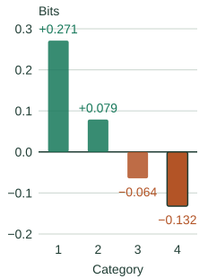

Where Entropy Comes From: KL Divergence
This optional chapter explains the logarithm in entropy impurity. Start with a probability prediction: how much should we penalize a model when the observed class was one it considered unlikely?
From one surprising outcome to average log loss
If the model assigns probability $q$ to the class that occurs, its log loss is $-\log_2 q$. Probability 1/2 gives a loss of 1 bit; probability 1/4 gives 2 bits. Confidently ruling out an outcome that actually occurs is penalized heavily.
Now let $p_i$ be how often class $i$ occurs and $q_i$ the model’s probability for that class. Average each class’s loss using its actual frequency. That average is cross-entropy, written $H(p,q)$. When the predictions match the frequencies, $q=p$, it becomes entropy, $H(p)$:
Each distribution sums to 1. A class absent from $p$ contributes zero; assigning zero probability in $q$ to a class with positive $p_i$ gives infinite loss. Base-2 logarithms give bits; natural logarithms give nats.
KL is the extra loss from a mismatched prediction
KL divergence, written $D_{\mathrm{KL}}(p\|q)$, subtracts the matched prediction’s loss from the model’s loss. Samples come from $p$; we evaluate probabilities supplied by $q$:
This quantity is nonnegative and is zero when the two distributions match. Swapping $p$ and $q$ changes the question and generally changes the answer. KL is therefore not a symmetric distance.
For the figure, use four class frequencies [0.4, 0.3, 0.2, 0.1] and a model predicting 0.25 for every class. Every outcome receives log loss 2, so cross-entropy is 2 bits. Entropy is about 1.846 bits; the extra loss is 0.154 bits.
▶ KL Divergence, Term by Term
Compare fixed distributions p and q, then add their four signed terms. The probabilities do not change. Try the reverse order to see a negative partial sum reach the same nonnegative completed KL.
Class probabilities
Green p: actual frequencies.
Blue q: model predictions.
Every bar uses a 0–0.50 scale.
Category 1
Category 2
Category 3
Category 4
Signed contributions
Each bar is pᵢ log₂(pᵢ/qᵢ). Positive terms go above zero; negative terms go below.

All four category contributions are included.
+0.271 + 0.079 − 0.064 − 0.132 ≈ 0.154 bits.
Completed KL: 0.154 bits. H(p,q) = 2.000 bits; H(p) = 1.846 bits.
Some individual terms are negative: a model can assign more probability than the true frequency to one class. Only the complete sum is guaranteed nonnegative. The running total is an accumulation of terms, not a sequence of separately evaluated models.
Work through a positive term and a negative one
Category 1 occurs with probability 0.40, but the uniform model assigns it only 0.25. The model pays 2 bits when that class occurs; the matched prediction pays $-\log_2(0.40)\approx1.322$ bits. Its extra cost per occurrence is about 0.678 bits. Weight that by the 0.40 occurrence frequency to get +0.271 bits in the average.
Category 4 shows the opposite effect. The model assigns 0.25 to a class that occurs only 0.10 of the time. Its 2-bit cost is lower than the matched prediction’s $-\log_2(0.10)\approx3.322$ bits on those particular outcomes. Weighting the difference gives $0.10(2-3.322)\approx-0.132$ bits. This class benefits from the model’s extra probability; other classes must give up probability because q still sums to 1.
To six decimal places, the contributions are +0.271229, +0.078910, −0.064386, and −0.132193. Summing before rounding gives approximately 0.153561 bits. Adding category 4 first gives a negative partial sum, but changing the addition order cannot change the final answer.
Swapping the distributions is a different operation: $D_{\mathrm{KL}}(q\|p)\approx0.176$ bits here. The averaging weights become q, and the logarithmic ratios reverse. It is not the same quantity as merely adding the original four terms in reverse order.
Why the complete sum cannot be negative
Matching p minimizes the average log loss under p. A mismatched q can improve the score for selected classes, as category 4 shows, but cannot improve the average across the full normalized distribution. The nonnegativity result follows from a single logarithm inequality.
A short proof, including zero-probability cases
For any positive u, $-\ln u\geq1-u$, with equality only at u = 1. For each class with $p_i>0$ and $q_i>0$, substitute $u=q_i/p_i$ and multiply by $p_i$:
Let S contain the classes with positive p. Add the inequalities over S. Their p probabilities sum to 1; their q probabilities sum to at most 1:
Since ln 2 is positive, KL measured in bits is nonnegative. Equality requires q = p on S and no probability assigned outside S, hence q = p everywhere. A class with p = 0 contributes zero. If some class has positive p but q = 0, its contribution is infinite, so nonnegativity still holds. The Stanford lecture gives the equivalent argument using Jensen’s inequality.
How does this relate to compression?
The quantity $-\log_2 q_i$ is an ideal code length. Averaging it under $p$ gives the ideal coding cost of using probabilities $q$ for data from $p$. KL measures the excess over using $p$ itself. Actual single-symbol prefix codes need integer lengths, so the ideal quantity is not always their exact length.
Why a tree prefers lower child entropy
A leaf uses its training class proportions as probability predictions. Its average training log loss is therefore the entropy of those proportions. Splitting replaces that one prediction with a prediction for each child. The weighted child entropy measures the resulting average loss.
A pure training leaf has entropy zero; a balanced two-class leaf has entropy 1 bit. This measures uncertainty in the observed label mixture. It does not promise that future labels in that region are certain.
Why does comparison with uniform give the same criterion?
For $K$ possible classes, let $u$ predict $1/K$ for each. Its cross-entropy is always $\log_2 K$, so the identity above becomes
With the same class set, lowering entropy increases KL from uniform. This is another interpretation of the same score, not an additional split objective.
Continue with tree controls
The next chapter explains training cost and pruning. The handwritten companion retains the scanned derivation.
Sources and next steps
- Stanford EE376A: Entropy and Relative Entropy — Definitions, log-loss comparison, and nonnegativity.
- Entropy as a tree criterion — The connection between class proportions and log loss.